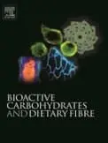

Supporting Journals

Food Hydrocolloids publishes original and innovative research concerned with the characterisation, properties, functionality and application of hydrocolloids in food products. Hydrocolloids are defined as polysaccharides and proteins of commercial importance. The key focus of the research should be on the hydrocolloid material itself and the manuscript should include a fundamental discussion of the research findings and their significance. Manuscripts that simply report data without providing a detailed interpretation of the results are unlikely to be accepted for publication in the journal.
Special Issue
The conference will be the subject of a Special Issue in the Food Hydrocolloids Journal.

Bioactive Carbohydrates and Dietary Fibre is intended to be an international journal focused on dietary fibre, and bioactive carbohydrates (including bioactive polysaccharides, oligosaccharides and glycoproteins. It will include original studies and comprehensive reviews on the primary structure, molecular characteristics including conformation, size and shape, and bioactivities demonstrated by studies using in vitro, cell culture, animal and human clinical trials for understanding the action mechanisms and efficacy of bioactive carbohydrates from plants, fungi, animals and produced by biotechnology.
Specific bioactivities such as reducing serum cholesterol, modulating blood glucose and insulin levels, fermentability in the gastrointestinal track, anti-tumor, anti-inflammatory, immune regulatory and anti-oxidant activities demonstrated by these bioactive carbohydrates are the main focus of this journal. It also covers the areas of interaction of dietary fibres, oligosaccharides, polysaccharides and glycoproteins with food matrices which may enhance or alter their efficacy, shelf-life stability of the bioactivities.
Special Issue
The conference will be the subject of a Special Issue in the Bioactive Carbohydrates and Dietary Fibre.